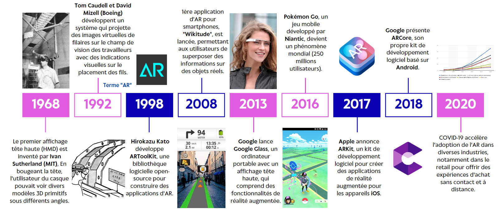
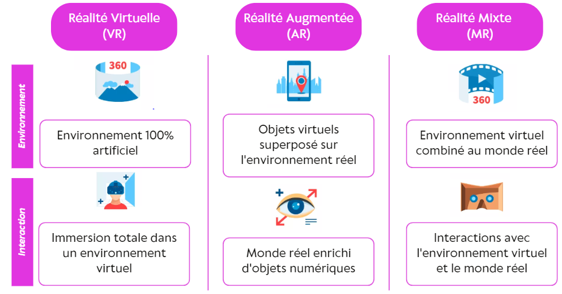
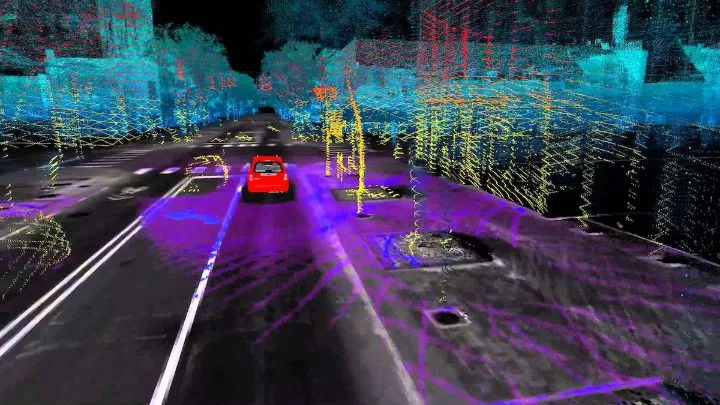
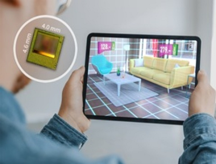
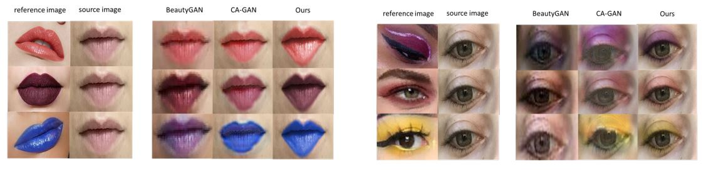

La Réalité Augmentée : Qu'est-ce que c'est et comment ça fonctionne ?
Lorsque l'on parle de réalité augmentée (RA), plusieurs images nous viennent à l'esprit. Les films, séries, anime, livres, jeux vidéo et même l'art ont contribué à créer un modèle mental de ce qu'est la RA. La plupart des gens imaginent que les utilisateurs voient hologrammes avec lesquels ils peuvent interagir par des gestes en l'air.
Une (brève) histoire de la réalité augmentée
Les dispositifs de réalité augmentée ont évolué depuis le premier prototype présenté en 1968 par Ivan Sutherland, professeur et chercheur au MIT, avec des améliorations au niveau du suivi, des capacités de rendu et du facteur de forme.
Ce n'est donc que lorsqu'Apple a introduit ARKit et que Google a lancé ARCore, deux kits de développement (SDK) qui facilitent la création d'applications de réalité augmentée par les développeurs, que les entreprises, les développeurs et même le public ont commencé à voir que la réalité augmentée (RA) deviendrait un courant dominant. Même si la technologie de la réalité augmentée, qui consiste à superposer des images virtuelles au monde réel, existait déjà auparavant, le lancement de ces plateformes de développement a considérablement facilité la création d'applications.
Différence entre RA, RV et RM
Tout d'abord, il convient de préciser en quoi la réalité augmentée se distingue de la réalité virtuelle et de la réalité hybride. En bref :
La réalité virtuelle (RV) :
La réalité virtuelle consiste à créer une expérience qui simule la vie réelle. Lorsque les utilisateurs font l'expérience de la réalité virtuelle, la réalité existante est entièrement occultée d'où on parle d'immersion totale.La réalité augmentée (RA) :
La réalité augmentée consiste à superposer des améliorations générées par ordinateur à la réalité existante. Les utilisateurs continuent de voir et d'expérimenter le monde réel qui les entoure, mais leur expérience est améliorée par la possibilité d'interagir avec lui par des moyens technologiques.La réalité hybride ou mixte (RM) :
La réalité hybride ou mixte est définie comme l'intégration d'objets numériques interactifs dans l'environnement réel de l'utilisateur. La réalité hybride diffère de la réalité augmentée car, au lieu d'afficher simplement des images, il est possible d'interagir et de manipuler les graphiques..
Types de Réalité Augmentée
Maintenant que nous avons appris à faire la distinction entre ce qui relève de la réalité augmentée et ce qui n'en relève pas, nous sommes en mesure d'approfondir notre compréhension du fonctionnement de la réalité augmentée. Il existe 2 familles de RA selon si elle est basée sur des marqueurs ou non, et la RA basée sans marqueurs a des sous-catégories récapitulées dans le tableau suivant :
| Catégorie | Définition | Caractéristiques | Exemples d'utilisation |
|---|---|---|---|
| RA basée sur un marqueur | Utilise un marqueur visuel pour aider à déterminer l'emplacement et l'orientation d'un objet virtuel dans le monde réel. | Utilisation d'un marqueur visuel pour déterminer la position et l'orientation de l'objet virtuel. Limitations dans le suivi de l'objet virtuel si le marqueur est obscurci ou hors de vue. Généralement utilisé pour des expériences AR relativement simples et pour les applications qui ne nécessitent pas un suivi précis de l'objet. | Carte de visite pour afficher un modèle 3D d'un produit ou d'une entreprise / Code QR pour afficher des informations supplémentaires sur un produit en superposition sur l'image de la caméra |
| RA sans marqueur - basée sur la projection | Projette un objet virtuel sur une surface réelle, créant ainsi une expérience AR. | Utilisation d'une surface pour projeter l'objet virtuel et la possibilité de créer des expériences AR interactives. | Projection d'un modèle 3D d'un meuble dans la pièce pour voir comment il s'intègre dans l'espace / Projection d'une image 2D sur un mur pour créer une fresque ou un dessin en réalité augmentée |
| RA sans marqueur - basée sur la localisation | Utilise des capteurs intégrés (comme des caméras) pour suivre l'emplacement et l'orientation de l'utilisateur dans le monde réel. | Une plus grande liberté de mouvement pour l'utilisateur et la possibilité de créer des expériences AR plus immersives. | Affichage d'informations sur des monuments historiques à proximité de l'utilisateur en utilisant la géolocalisation / Affichage d'informations sur les restaurants à proximité en utilisant la géolocalisation et la réalité augmentée |
| RA sans marqueur - basée sur la superposition | Superpose un objet virtuel sur un objet réel, créant ainsi une expérience AR. | Possibilité de superposer des informations utiles sur le monde réel (comme des informations de navigation) et la création d'expériences AR plus réalistes. | Superposition d'un modèle 3D d'une voiture sur l'image de la caméra pour voir à quoi elle ressemblerait dans la rue / Superposition d'un modèle 3D d'une plante pour aider à identifier les différentes parties de la plante |
| RA sans marqueur - basée sur les contours | Utilise des contours pour identifier et suivre les objets réels dans le monde réel. | Possibilité de créer des expériences AR précises et de haute qualité. | Dessin en réalité augmentée : utilisation d'un stylet pour dessiner dans l'air et afficher le dessin en 3D dans l'espace / Suivi des mouvements du corps pour créer des effets de réalité augmentée, tels que des ailes d'oiseau apparaissant lorsque les bras sont étendus |
Comment ça marche ?
Selon le type, la RA peut utiliser des capteurs de profondeur, des accéléromètres, des caméras, des gyroscopes et des capteurs de lumière pour collecter des données sur l'environnement de l'utilisateur. Ils mesurent la distance par rapport aux objets, la vitesse du mouvement, la direction et l'angle, ainsi que l'orientation générale dans l'espace. Les données sont ensuite traitées pour afficher l'animation en temps réel et à un endroit pertinent.
Les différentes technologies de réalité augmentée
Chacun des cas d’usages et des applications de réalité augmentée utilisent des fonctionnalités et combinent des technologies différentes afin de réaliser un objectif bien déterminé. Mais plus généralement 3 technologies essentielles permettent à la RA de fonctionner. Il s'agit de la localisation et de la cartographie simultanées (SLAM), du suivi de la profondeur, ainsi que du traitement et de la projection d'images. Ensemble, elles font de la réalité augmentée une réalité.
-
Qu'est-ce que la technologie SLAM ?
SLAM (Simultaneous Localization and Mapping) désigne la technologie qui permet de placer avec précision un contenu numérique dans le monde réel. Grâce à une combinaison de capteurs et de vision par ordinateur, le SLAM suit les mouvements de l'utilisateur et produit une carte de l'environnement. Cette carte est ensuite utilisée pour placer du contenu numérique, tel que des modèles 3D ou des objets virtuels, dans le monde réel. A titre d'exemple, les aspirateurs robots constituent l'une des premières applications de la technologie SLAM.
 Source : https://www.flyability.com/simultaneous-localization-and-mapping Qu'est-ce que le suivi de profondeur ?
Le suivi de la profondeur est réalisé grâce à l'utilisation de capteurs spécialisés, tels que des caméras à temps de vol (ToF) ou des capteurs de profondeur, qui capturent les informations de profondeur de la scène. Ces informations sont ensuite utilisées pour créer un nuage de points en 3D de l'environnement, qui sert à suivre le mouvement de l'appareil de l'utilisateur et le placement des objets virtuels en temps réel. Grâce au suivi de la profondeur, les expériences de RA peuvent être plus immersives et réalistes, car les objets virtuels peuvent être correctement alignés sur les objets du monde réel et réagir de manière réaliste aux changements dans l'environnement de l'utilisateur. Par exemple, un jeu de réalité augmentée qui consiste à placer des objets virtuels sur une surface réelle peut être plus précis et plus attrayant grâce au suivi de la profondeur. En outre, le suivi de la profondeur peut améliorer la précision des fonctions de RA telles que la reconnaissance des objets, le suivi des visages et la reconnaissance des gestes, en les rendant plus réactives et plus précises.
 Source : https://www.electronicsmedia.info/2020/10/29/3d-depth-sensor-for-immersive-smarter-ar-experiences/Qu'est-ce que le traitement et projection d'images?
Il s’agit d’une application de la vision par ordinateur qui permet de détecter et d'analyser les objets dans le monde réel en utilisant des algorithmes de réseaux de neurones. Les algorithmes de vision par ordinateur développés doivent donc être capables d'observer, traiter, évaluer et comprendre les images numériques et les flux vidéos assez rapidement pour avoir une interaction sans rupture et fluide.  Source : https://arxiv.org/pdf/2105.06407.pdf